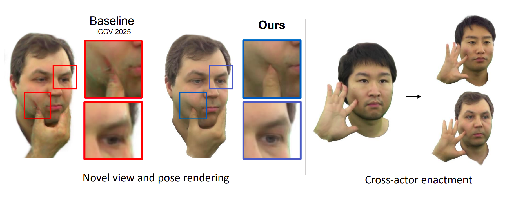

We present NBAvatar - a method for realistic rendering of head avatars handling non-rigid deformations caused by hand-face interaction. We introduce a novel representation for animated avatars by combining the training of oriented planar primitives with neural rendering.
Such a combination of explicit and implicit representations enables NBAvatar to handle temporally and pose-consistent geometry, along with fine-grained appearance details provided by the neural rendering technique. In our experiments, we demonstrate that NBAvatar implicitly learns color transformations caused by face-hand interactions and surpasses existing approaches in terms of novel-view and novel-pose rendering quality. Specifically, NBAvatar achieves up to 30% LPIPS reduction under high-resolution megapixel rendering compared to Gaussian-based avatar methods, while also improving PSNR and SSIM, and achieves higher structural similarity compared to the state-of-the-art hand-face interaction method InteractAvatar.
@misc{svitov2026nbavatarneuralbillboardsavatars,
title={NBAvatar: Neural Billboards Avatars with Realistic Hand-Face Interaction},
author={David Svitov and Mahtab Dahaghin},
year={2026},
eprint={2603.12063},
archivePrefix={arXiv},
primaryClass={cs.CV},
url={https://arxiv.org/abs/2603.12063},
}